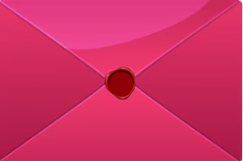

Nuestro Futuro
Querida Avril, Hoy quiero regalarte palabras que expresen lo que a veces no alcanzo a decir con gestos. Cuando pienso en vos, todo se llena de luz, de vida, de un color único que el mundo jamás podría igualar. Sos mi mayor inspiración, y por eso escribí este pequeño poema para vos: "Sos mi Sol y mi Lluvia" Sos el sol que acaricia el día, la brisa suave que el alma ansía. En cada palabra, un mundo dibujás, y en tus ojos, mi vida se iluminá. Sos la lluvia que calma la sed, un refugio dulce al anochecer. Tu risa es el canto que siempre me encuentra, mi norte, mi guía, mi estrella perpetua. Si el tiempo pudiera robarte un suspiro, le rogaría dejarme contigo. Porque en tus brazos, el mundo se calma, y en tu sonrisa, vive mi alma.
Espero que esta carta y este poema puedan sacarte una sonrisa, como vos hacés conmigo cada día. Con todo mi amor, Gabriel des Rotours